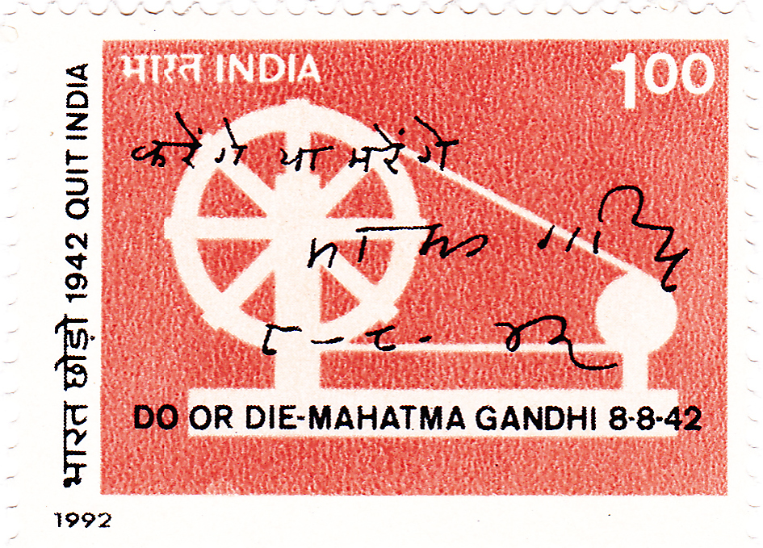
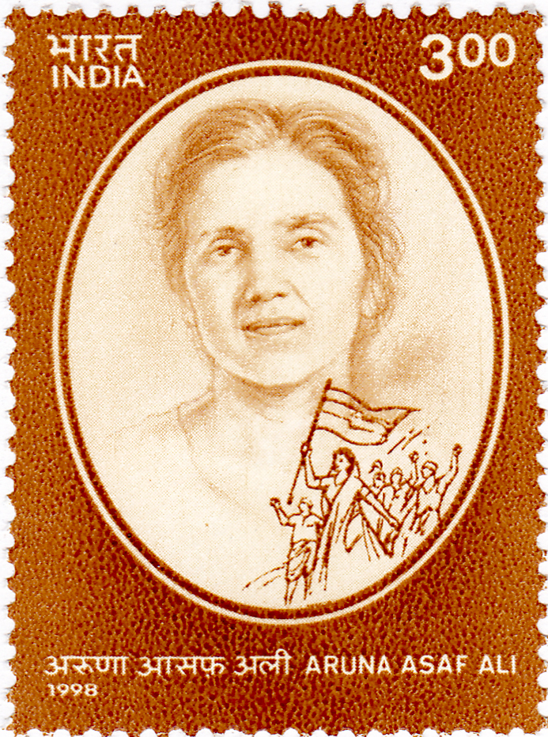
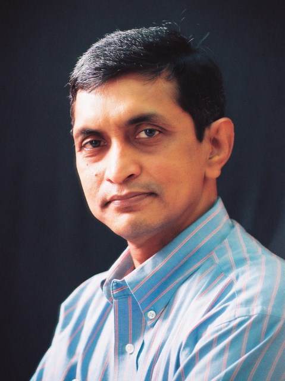

📂 Modern Indian History⚖️ Weight: 0.9🎯 Expected: 2–3 Qs🔶 Bihar: JP escape, Azad Dasta, Sri Krishna Singh
📚 Core Content & PYQ Alignment
70th BPSC PYQGandhi's "Do or Die" slogan (Q20): The 70th BPSC asked: "Who gave the slogan 'DO OR DIE' and when?" — answer: Gandhiji during Quit India Movement (option C). Gandhi gave this slogan at the Bombay session of the INC (August 8, 1942, Gowalia Tank Maidan). The slogan was "Karenge ya Marenge" (We shall do or die). Note: Subhash Chandra Bose gave "Give me blood, I shall give you freedom" — a different slogan.
70th BPSC PYQParallel governments during Quit India (Q66): The 70th BPSC asked which was NOT correctly matched: (A) Prati Sarkar — Satara ✓; (B) Raiyati Sarkar — Kheda ✗ (should be Ballia, UP); (C) Jati Sarkar — Tamluk ✓; (D) Praja Mandal — Talchar ✓. Answer: (B) Raiyati Sarkar — Kheda is NOT correct. The Ballia parallel government (UP) was led by Chittu Pandey.
69th BPSC PYQShri Krishna Singh / Bihar Kesari (Q134): The 69th BPSC noted: "Shri Krishna Singh, also known as Bihar Kesari, actively participated in the Quit India Movement (1942)." He was a key Bihar Congress leader and later the first Chief Minister of Bihar (1946-1961). Bihar was a major hotspot — underground activities, Azad Dasta, JP's escape from Hazaribagh Jail.
71st BPSC PYQBihar events ↔ leaders matching (Q100): (a) Champaran Satyagrah → Dr. Rajendra Prasad; (b) Azad Dasta → Shyam Narayan Singh; (c) Individual Satyagraha in Bihar 1940 → Sahajanand Saraswati; (d) Kisan Sabha Bihar → Jayaprakash Narayan. Correct code: 4, 2, 3, 1. The Azad Dasta was the underground guerrilla group in Bihar during Quit India 1942, led by Shyam Narayan Singh.
💡 Deep-dive ready: Complete analysis of causes (Cripps Mission failure), the August 8 resolution, parallel governments, Bihar as hotspot (JP, Azad Dasta, Sri Krishna Singh), underground leaders, and 7 exam predictions:
Quit India 1942 Master Detail →
A. Background: The Road to Quit India EXAM CORE
Event
Year
Significance
WWII begins
September 1939
India declared at war by Viceroy Linlithgow without consulting Indian leaders → INC provincial ministries resigned (October 1939)
August Offer
August 1940
Linlithgow promised dominion status after WWII + constituent assembly → INC rejected; Muslim League accepted (first British acknowledgment of Pakistan possibility)
Cripps Mission
March–April 1942
Stafford Cripps proposed dominion status after war + right to secede → INC rejected ("post-dated cheque on a crashing bank"); League rejected → directly led to Quit India
Quit India Resolution
August 8, 1942
Bombay INC session at Gowalia Tank Maidan — Gandhi's "Do or Die" slogan → leaders arrested August 9 → spontaneous mass movement

The Quit India Movement (August 1942) — Gandhi's last mass movement, launched at Gowalia Tank Maidan, Bombay (now August Kranti Maidan). The slogan was "Do or Die" (Karenge ya Marenge).
B. The Quit India Resolution (August 8, 1942)
Session: Bombay INC session (August 7–8, 1942) at Gowalia Tank Maidan (now August Kranti Maidan)
Resolution: "This Congress demands immediate ending of British rule in India" — the British must quit India
Gandhi's slogan: "Do or Die" (Karenge ya Marenge) — "We shall either free India or die in the attempt"
August 9, 1942: all top Congress leaders arrested (Gandhi, Nehru, Patel, Azad, Kripalani) — the movement became spontaneous and leaderless
Gandhi's arrest: taken to Aga Khan Palace in Pune (where his wife Kasturba died in 1944)
Duration: the movement continued for months despite suppression — strongest in Bombay, Bihar, Bengal, UP
C. Parallel Governments During Quit India PYQ PATTERN
Parallel Government
Location
Leader(s)
Key Features
Prati Sarkar
Satara, Maharashtra
Y.B. Chavan, Nana Patil
Administered villages, collected taxes, ran courts — lasted until 1945
Jati Sarkar
Tamluk, Midnapore, Bengal
Satish Samanta, Matangini Hazra
Ran parallel administration in Midnapore district — Matangini Hazra was shot dead leading a procession
Ballia
Ballia, UP
Chittu Pandey
Declared Ballia independent for a brief period in August 1942 — "Baghi Ballia" (rebellious Ballia)
Praja Mandal
Talchar, Orissa
Local leaders
Parallel government in Talchar region — attacked government property
EXAM TIPNote: The 70th BPSC Q66 listed "Raiyati Sarkar — Kheda (Gujarat)" as an option — this is NOT a correct match. The correct parallel governments were at Satara, Tamluk, Ballia, and Talchar. Kheda (Gujarat) was associated with the 1918 Kheda Satyagraha, not the 1942 parallel government.
🧠 Fact Matrix & Key Data
Key Dates & Events
Date
Event
September 3, 1939
WWII begins; India declared at war by Viceroy without consulting Indians
October 1939
INC provincial ministries resigned (protest against unilateral declaration of war)
August 1940
August Offer by Viceroy Linlithgow — rejected by INC
December 1940
Individual Satyagraha (Vinoba Bhave was first; Bihar: Sahajanand Saraswati)
March–April 1942
Cripps Mission — failed; Gandhi called it "post-dated cheque on a crashing bank"
July 14, 1942
INC Working Committee passed the Quit India resolution at Wardha
August 8, 1942
Bombay INC session ratified Quit India Resolution; Gandhi's "Do or Die" slogan
August 9, 1942
All top Congress leaders arrested; movement became spontaneous
November 1942
JP escaped from Hazaribagh Jail (Bihar) — went underground
1943
JP arrested; Gandhi on fast (February 1943) in Aga Khan Palace
February 22, 1944
Kasturba Gandhi died at Aga Khan Palace, Pune
May 1944
Gandhi released from prison (health reasons)
June–July 1945
Simla Conference (Wavell Plan) — failed
Key Personalities
Person
Role in Quit India
Mahatma Gandhi
Launched movement; "Do or Die" slogan; arrested August 9, 1942; Aga Khan Palace
Aruna Asaf Ali
"Heroine of 1942"; hoisted flag at Gowalia Tank Maidan on August 9; went underground
Jayaprakash Narayan (JP)
Escaped Hazaribagh Jail; organised underground in Bihar; arrested 1943
Ram Manohar Lohia
Underground radio broadcasts; arrested in 1944; Goa detention
Shyam Narayan Singh
Led Azad Dasta (Bihar underground guerrilla group)
Shri Krishna Singh
"Bihar Kesari"; participated actively in Bihar; later first CM of Bihar (1946)
Chittu Pandey
Led parallel government at Ballia (UP) — "Baghi Ballia"
Matangini Hazra
Shot dead leading a procession in Tamluk, Midnapore (Bengal)
Y.B. Chavan
Led Prati Sarkar at Satara (Maharashtra)
Stafford Cripps
Led the Cripps Mission (March 1942) — its failure led to Quit India
Lord Linlithgow
Viceroy (1936-1943); suppressed Quit India with force; made August Offer (1940)

Aruna Asaf Ali — "Heroine of the 1942 Movement." She hoisted the Indian flag at Gowalia Tank Maidan on August 9, 1942, after all Congress leaders were arrested. She went underground and organised the movement. Awarded Bharat Ratna (1997, posthumously).
🧠 Mnemonic — Q-U-I-T: Q (Quit Resolution Aug 8) → U (Underground — JP escaped Hazaribagh) → I (Independence slogan — "Do or Die") → T (Tamluk/Ballia/Satara — parallel governments). "QUIT: the four key elements of the Quit India Movement."
🔶 Bihar Connection
Bihar — A Major Hotspot of Quit India 1942
JP's Escape from Hazaribagh Jail: Jayaprakash Narayan escaped from Hazaribagh Jail (Bihar) in November 1942 — one of the most famous episodes of Quit India. His escape was organised by his wife Prabhavati and fellow freedom fighters. JP went underground and organised the resistance from Bihar. He was arrested in 1943.
Azad Dasta: the underground guerrilla group in Bihar, led by Shyam Narayan Singh (matched in 71st BPSC Q100). The Azad Dasta conducted sabotage operations — attacks on railway lines, telegraph lines, and government property.
Shri Krishna Singh (Bihar Kesari): actively participated in the Quit India Movement (69th BPSC Q134). He was a key Bihar Congress leader and later became the first Chief Minister of Bihar (1946-1961).
Attacks on infrastructure: Bihar saw widespread attacks on railway stations, post offices, police stations, and telegraph lines. The Bihar countryside was in rebellion for months.
Sahajanand Saraswati: led the Individual Satyagraha in Bihar (1940) — matched in 71st BPSC Q100 as "Individual Satyagraha in Bihar 1940 → Sahajanand Saraswati."
Anugrah Narayan Sinha: another key Bihar leader who participated in the movement — he was arrested and imprisoned.
Bihar's significance: Bihar was one of the strongest centers of Quit India activity, alongside Bombay, Bengal, and UP. The underground movement in Bihar was particularly well-organised.

Jayaprakash Narayan (JP) — escaped from Hazaribagh Jail (Bihar) in November 1942 during the Quit India Movement. He organised the underground resistance from Bihar. He later became a key post-independence political leader and led the 1974 "Total Revolution" against the Emergency.
🔗 Cross-Topic Connections
Cross-Topic Links:
Topic 32 (Gandhian Movements): Quit India was the fourth and final major mass movement (after Rowlatt 1919, Non-Cooperation 1920, Civil Disobedience 1930). The 71st BPSC Q100 matched all four Bihar events: Champaran → Rajendra Prasad, Azad Dasta → Shyam Narayan Singh, Individual Satyagraha 1940 → Sahajanand Saraswati, Kisan Sabha → JP Narayan.
Topic 33 (Civil Disobedience): The GoI Act 1935 led to provincial elections (1937) — the INC won in 7 of 11 provinces. These ministries resigned in October 1939 (WWII), creating a political vacuum that eventually led to the Quit India Movement.
Topic 35 (Revolutionaries): The Quit India Movement saw a convergence of Gandhian and revolutionary approaches — underground activity (JP, Ram Manohar Lohia) borrowed tactics from the revolutionaries. Subhash Chandra Bose's INA was fighting alongside, creating pressure on the British from multiple fronts.
📰 Current Relevance
August Kranti Maidan: the Gowalia Tank Maidan was renamed August Kranti Maidan — now a major historical monument in Mumbai. The August Kranti Rajdhani Express is named after it.
August 9 as significant date: August 9 (the day of arrests) is observed as the anniversary of Quit India. August Kranti Diwas is commemorated across India.
JP's legacy: Jayaprakash Narayan's underground leadership in Bihar during Quit India established his credentials as a mass leader. He later led the 1974 Bihar Movement and the "Total Revolution" against the Emergency (1975).
Bihar's freedom movement heritage: Bihar's role in Quit India (JP's escape, Azad Dasta, Sri Krishna Singh) is a source of state pride and a recurring theme in BPSC exams — the 69th and 71st BPSCs both had Bihar-specific Quit India questions.
✍️ MCQ Practice Set — 25 Questions (BPSC Level)
Test your knowledge. Select the best answer for each question, then click "Check Answers" to see your score and explanations.
Your Score: 0/25
Q1. The Quit India Movement was launched by Gandhi at which session of the INC?
✅ Correct Answer: (A) — The Quit India Movement was launched by Gandhi at the Bombay session of the INC (August 8, 1942) at Gowalia Tank Maidan. Gandhi gave the slogan "Do or Die" (Karenge ya Marenge).
Q2. Who gave the slogan "Do or Die" and when?
✅ Correct Answer: (C) — Gandhiji gave the slogan "Do or Die" during the Quit India Movement (August 8, 1942, Bombay). Bose gave "Give me blood, I shall give you freedom."
Q3. The Quit India Movement was launched in response to which event?
✅ Correct Answer: (A) — The failure of the Cripps Mission (March-April 1942) led directly to the Quit India Movement. Gandhi called the Cripps proposal "a post-dated cheque on a crashing bank."
Q4. Gandhi described the Cripps Mission proposal as:
✅ Correct Answer: (A) — Gandhi called the Cripps Mission proposal "a post-dated cheque on a crashing bank." Nehru called the GoI Act 1935 "a new charter of slavery" — different quote.
Q5. Who was the Viceroy of India during the Quit India Movement (1942)?
✅ Correct Answer: (A) — Lord Linlithgow (Viceroy 1936-1943) was Viceroy during Quit India. He suppressed the movement with force. Wavell succeeded him (1943-1947).
Q6. The Quit India Resolution was passed on which date?
✅ Correct Answer: (A) — August 8, 1942 — Bombay INC session at Gowalia Tank Maidan. On August 9, all top leaders were arrested and the movement became spontaneous.
Q7. Shri Krishna Singh, also known as Bihar Kesari, actively participated in which movement?
✅ Correct Answer: (A) — Shri Krishna Singh (Bihar Kesari) participated in the Quit India Movement (1942) — 69th BPSC Q134. He later became Bihar's first Chief Minister (1946-1961).
Q8. During the Quit India Movement, parallel governments were established at many places. Which of the following is NOT correctly matched?
✅ Correct Answer: (B) — 70th BPSC Q66: "Raiyati Sarkar — Kheda" is NOT correct. The Ballia parallel government (UP) was led by Chittu Pandey — Kheda was associated with the 1918 Kheda Satyagraha, not 1942.
Q9. Who led the underground activities during the Quit India Movement in Bihar?
✅ Correct Answer: (A) — Shyam Narayan Singh led the Azad Dasta (underground guerrilla group) in Bihar during Quit India — 71st BPSC Q100 matched Azad Dasta → Shyam Narayan Singh.
Q10. Who among the following was NOT arrested on August 9, 1942?
✅ Correct Answer: (A) — JP escaped to the underground before August 9. Gandhi, Nehru, Patel, and Azad were all arrested on August 9, 1942. JP escaped from Hazaribagh Jail later in November 1942.
Q11. The Cripps Mission (1942) came to India primarily to:
✅ Correct Answer: (A) — The Cripps Mission came to secure Indian cooperation in WWII. It proposed dominion status after the war — rejected by both INC and Muslim League.
Q12. Which of the following was a key feature of the Quit India Movement?
✅ Correct Answer: (A) — After the arrest of all Congress leaders on August 9, 1942, the movement became spontaneous and leaderless. It turned militant in many areas. The Muslim League stayed away.
Q13. Arrange in chronological order: 1. Cripps Mission 2. Quit India Movement 3. August Offer 4. Wavell Plan
✅ Correct Answer: (A) — August Offer (1940) → Cripps Mission (March 1942) → Quit India (August 1942) → Wavell Plan (1945).
Q14. The "August Offer" was made by which Viceroy in which year?
✅ Correct Answer: (A) — The August Offer was made by Viceroy Lord Linlithgow in August 1940. It promised dominion status after WWII — the INC rejected it.
Q15. Who among the following women leaders played a prominent role in the Quit India Movement by hoisting the Indian flag at the Gowalia Tank Maidan?
✅ Correct Answer: (A) — Aruna Asaf Ali hoisted the Indian flag at Gowalia Tank Maidan on August 9, 1942, after all Congress leaders were arrested. She was called the "Heroine of the 1942 Movement."
Q16. Consider the following about the Quit India Movement: 1. It was launched by Gandhi at the Bombay INC session (August 8, 1942). 2. It was a non-violent movement throughout. 3. The Muslim League supported it. Which is/are correct?
✅ Correct Answer: (A) — Only statement 1 is correct. The movement turned militant after August 9. The Muslim League did NOT support it — Jinnah called it a "Congress stunt."
Q17. The parallel government established at Ballia (UP) during the Quit India Movement was led by:
✅ Correct Answer: (A) — Chittu Pandey led the parallel government at Ballia (UP) — "Baghi Ballia" (rebellious Ballia) — for a brief period in August 1942.
Q18. The 71st BPSC (Q100) matched Bihar events with leaders. The correct matching is:
Q19. Which of the following was NOT a reason for the failure of the Cripps Mission?
✅ Correct Answer: (D) — The British government did NOT withdraw the offer — Cripps left after the negotiations failed on their own. Options A, B, and C were all genuine reasons for the failure.
Q20. Who among the following was known as the "Heroine of the 1942 Movement"?
✅ Correct Answer: (A) — Aruna Asaf Ali was the "Heroine of the 1942 Movement." She hoisted the flag at Gowalia Tank Maidan on August 9, 1942. Awarded Bharat Ratna (1997, posthumously).
Q21. The Quit India Movement was also known as:
✅ Correct Answer: (A) — The Quit India Movement was also known as "August Kranti" (August Revolution). Gowalia Tank Maidan was renamed August Kranti Maidan.
Q22. Bihar's role in the Quit India Movement included:
✅ Correct Answer: (A) — Bihar was a major hotspot: underground activities led by JP (escaped Hazaribagh Jail) and the Azad Dasta (Shyam Narayan Singh). Sri Krishna Singh also participated (69th BPSC Q134).
Q23. Which plan proposed the formation of an executive council with Indian members (excluding the INC and Muslim League leaders) in 1945?
✅ Correct Answer: (A) — The Wavell Plan (1945) proposed an executive council with Indian members. It was discussed at the Simla Conference (June-July 1945), which failed because the Muslim League insisted on nominating all Muslim members.
Q24. The Quit India Movement was eventually suppressed. Which statement best describes its outcome?
✅ Correct Answer: (A) — The movement was suppressed by force, but it demonstrated the depth of nationalist feeling and made clear the British could not rule without Indian consent. It accelerated the British decision to leave.
Q25. Jayaprakash Narayan (JP) escaped from which jail during the Quit India Movement?
✅ Correct Answer: (A) — JP escaped from Hazaribagh Jail (Bihar) in November 1942 — organised by his wife Prabhavati. He went underground and organised the Bihar resistance before being arrested in 1943.
🎯 Exam Predictions
P1Do or Die slogan (HIGH): Gandhi at Bombay session August 8, 1942, Gowalia Tank Maidan (70th BPSC Q20). Different from Bose's "Give me blood" and Nehru's "Tryst with Destiny." Know who said what.
P2Bihar matching (HIGH): 71st BPSC Q100: Champaran→Rajendra Prasad, Azad Dasta→Shyam Narayan Singh, Individual Satyagraha 1940→Sahajanand Saraswati, Kisan Sabha→JP Narayan. Sri Krishna Singh (Bihar Kesari) participated in Quit India (69th Q134).
P3Parallel governments (MEDIUM): 70th BPSC Q66: Prati Sarkar-Satara, Jati Sarkar-Tamluk, Praja Mandal-Talchar are correct. "Raiyati Sarkar-Kheda" is NOT correct (should be Ballia, UP). Know all four parallel governments and leaders.
P4Cripps Mission failure (MEDIUM): Came to secure WWII cooperation; proposed dominion status after war; Gandhi called it "post-dated cheque on a crashing bank"; both INC and League rejected; led directly to Quit India.
P5Chronology (LOW): August Offer (1940) → Cripps Mission (March 1942) → Quit India (August 1942) → Wavell Plan/Simla Conference (1945) → Cabinet Mission (1946) → Mountbatten Plan (1947).
P6Aruna Asaf Ali (LOW): "Heroine of 1942"; hoisted flag at Gowalia Tank Maidan on August 9; Bharat Ratna 1997. She is a potential question — know her role and title.
P7JP's Hazaribagh escape (LOW): Bihar-specific — JP escaped from Hazaribagh Jail (November 1942). His wife Prabhavati helped. He organised underground resistance. Arrested 1943. This highlights Bihar as a hotspot.
📖 References
Bipan Chandra et al., India's Struggle for Independence, Chapter 19 (Quit India Movement)
Sumit Sarkar, Modern India 1885-1947, pp. 326–335
70th BPSC PYQ Q20 (Do or Die slogan), Q66 (parallel governments)